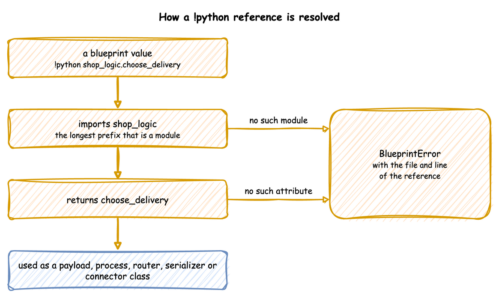

Call Python from YAML
A blueprint holds configuration as plain YAML. When a simulation needs logic that YAML cannot express, the file can reference a Python object with !python module.attribute in place of a value. This guide covers when to use it, how a reference is found, what each field receives, the setup step, and the errors a reference can give. It then works through the OML hot rolling digital twin, a steel mill model, and ends with a note on security.
Before You Start
- YAML Blueprints describes the blueprint file.
- The Related Records example is a complete blueprint with one Python process.
- Every file on this page is in the repository under
docs/snippets/.
When to Use It
Use !python when a blueprint needs one of these:
- Field values with logic. Random or weighted choices, fields derived from other fields and state carried from one event to the next are written as a payload function or a process.
- More than a task can describe. Collecting several entities into one, such as a batch, is written as a process. Routing (
next), priorities (priorityandqueue: priority), stores and containers, several resources per task (resource: [...]andkeep), preemption (preempt: true) and breakdowns (breakdown:) are written in plain YAML. - Readings other than the built-in statistics.
stats: minimalpublishes resource, store and container readings, a container'slevelamong them. Use a telemetry function to publish variables and derived metrics. - Routing over several destinations, and serializers. A router or an Avro serializer is a Python object.
- Setup a connector does not do itself, such as topics that only a router knows about.
- A connector from another package.
A setting that is a value needs no Python. Environment variables, relative times, when: history and when: live, filesystem and catalog mappings, Iceberg schemas and Postgres tables are all plain YAML, as YAML Keys and Egress list. A value can still come from a module when another program already defines it, as the hot rolling twin below reads its broker address from src/config.py.
Security
Loading a blueprint runs the imports it names. !python imports modules, and importing a module runs its top-level code. A blueprint is therefore as trusted as a Python script: load only files you would run as code, in a local or trusted CI workflow.
Every other node is constructed by yaml.SafeLoader. The tag is registered on a subclass of it, so yaml.safe_load elsewhere in the process is unaffected. Only !python and !include are added to YAML. Every other tag, such as !!python/object, is rejected as yaml.safe_load rejects it.
Steps
How a Reference Is Resolved
!python module.attribute imports module and returns its attribute. The reference can name anything: a function, a class, a dictionary or a constant.

The longest prefix that is a module is imported, and the rest is read as attributes, so pkg.module.func and module.Class.attribute both work. Before anything is resolved, the folder of the YAML file is added to the front of sys.path, unless it is already on it. A module beside the blueprint is therefore found from any working directory. Other modules are found on the normal sys.path, which includes installed packages. ${VAR} is replaced inside a reference too, so !python ${LOGIC}.ticker picks the module from the environment.
Every reference is resolved and checked when the file is loaded, so a wrong reference fails before the run starts, with the file and line.
| Field | Must be | Called as |
|---|---|---|
processes[].function |
a generator function | function(context, **kwargs) when the run starts |
tasks.<name>.payload |
a callable, or a mapping | payload(task_id, context) once per finished task |
telemetry[].function |
a callable | function(context) every interval |
egress[].when |
a callable, or history or live |
when(record), True to send the record to that sink |
ingress[].type, egress[].type |
a class, or a short name | type(**config) while the blueprint is built |
run.before[] |
a callable | before() once, at the start of run() |
any value under config, simulation or run.until |
whatever that argument takes | not called |
Processes, Payloads and kwargs
This blueprint keeps the shop in YAML and moves three pieces of logic into Python: a payload that picks each order's delivery, a breaks process with arguments, and a predicate that keeps telemetry off the terminal:
What each reference receives:
payloadis called aschoose_delivery(task_id, context)for every packed order. It draws fromcontext.sampler, the generator seeded byrandom_seed, so the deliveries repeat with the seed.processesentries are called asfunction(context, **kwargs)when the run starts.kwargsis how one function serves several resources.whenis called with every record and returns True to send it to that sink.
The run shows the delivery that the payload picked and the events of the breaks process:
A process is written in one of two ways. A bare reference, - !python module.func, is called as func(context). A mapping with function and kwargs is called as func(context, **kwargs). kwargs is what lets a blueprint start a process whose signature is not (context). When the signature differs more, write a small adapter: a generator function that takes the context, picks out what the process needs, and hands over with yield from.
| docs/snippets/hot_rolling/hot_rolling_adapter.py:arrivals | |
|---|---|
A process must be a generator function, one that contains yield. The check runs when the file is loaded and looks only at the function, so an adapter that returns a generator instead of yielding from one is rejected. Write adapters with yield from.
Routers, Serializers and Connector Classes
A router replaces the default destination of every record. Each router is a function that receives a record:
path_routeron Parquet and JSONL, andtable_routeron Iceberg, return the record's destination, or None to drop it.topic_routeron Kafka must always return a topic. To drop records before Kafka, give the sink awhenpredicate.
With a router, records are written as the router leaves them, so flattening events and dropping telemetry become the router's job. Kafka also leaves topic creation to the caller, because only the router knows which topics it uses. The hot rolling twin below sends every record to one of four topics with topic_router: !python routing.custom_topic_router.
A serializer is an object, so it is built in a module and referenced. KafkaEgress takes default_serializer and topic_serializers, for example default_serializer: !python serializers.AVRO, where serializers.py builds a ConfluentAvroSerializer with the registry URL and the schema.
A connector from another package is referenced by class: type: !python my_package.MyEgress. Its config is passed to the constructor, as for a built-in one.
Setup with run.before
run.before lists functions called with no arguments, once, at the start of run(). Connectors already create what they write to when they can: Kafka its event and telemetry topics, Postgres the tables under tables, and Parquet and JSONL their folders. run.before is for anything else, such as the five topics the hot rolling twin below creates for its router.
Put such setup in a function rather than at the top of the module. The module is imported when the file is loaded, so its top-level code runs even when the blueprint is loaded and never run.
| docs/snippets/yaml_build/connectors.yaml:before | |
|---|---|
The module beside the blueprint holds the setup function, and the path_router its Jsonl sink uses:
Check the Result
A reference that cannot be resolved stops the load with its line. python_error.yaml names shop_logic.missing as the payload of its task, and desflow run python_error.yaml prints:
A module that exists but fails on one of its own imports is reported with that error, rather than as a missing module.
Example
Lift the OML hot rolling twin. The OML hot rolling digital twin is a steel mill written with the low-level API. Its generator.py builds a SimParameter with three arrivals, three services, three resources, three containers and three variables. It connects Kafka in both directions with a topic router, and starts the processes in sim_logic.py. Those processes take (env, sampler, resource, ...), not a context, and sim_logic.py runs to 262 lines of multi-stage routing, wear and physics.
The configuration moves to YAML. The processes keep their logic, and a small adapter changes only how they are called.
What moved. The whole SimParameter moved to the blueprint, with both Kafka connectors and the custom topic router, the seed, the factor and the topic creation. The broker address and the topic names stay in src/config.py, and the blueprint references them. containers and variables carry the wear levels and drift velocities the processes read and write.
What stayed. drift_engine, arrival_process, roll_slab and telemetry_monitor stay in Python, with one change. They read and write the wear at HotRolling.containers.wear_<grade>.current_cap, but a container's current_cap is now its capacity, not its level. Those paths in sim_logic.py and dashboard.py therefore become .level. The adapter is one generator function per process. Each takes the context, picks out the environment, the sampler and the mill resource, and hands over with yield from. The primer slab and the arrival loop are separate entries, so they start in the order generator.py starts them.
What is new. The scenario turns on gradual wear on the structural line at ten minutes. The twin's dashboard does this by hand over Kafka. As a scenario it repeats exactly, and it can still be combined with the dashboard, because both write to the same registry.